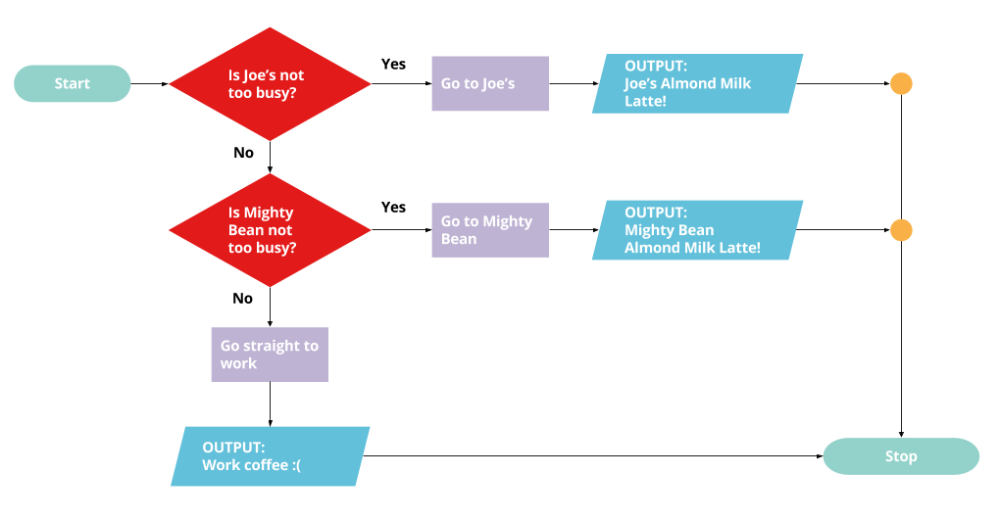

Commit to Yourself
This may get hard, but it's going to be worth it! I hearby promise to trust the process, and reach out when I need help! I promise to be patient with myself, and not rush if I don't understand something.
It's been a journey - trust me, I didn't want to use the word "journey"...but truly, that's what it's been. I've been learning computer programming from the fabtastic Skillcrush, mixed with w3 schools, and lots and lots and lots of repetition.
I've been learning how I learn, and slowly but surely becoming more and more confident with each week. (Not each day - there are far too many ups and downs to say each day I've improved!)
This page (and probably more) will hold all of my Javascript discoveries. I hope you enjoy and are able to gain some value from it!
This may get hard, but it's going to be worth it! I hearby promise to trust the process, and reach out when I need help! I promise to be patient with myself, and not rush if I don't understand something.
You can make slideshows, pop ups, and sick animations! And much more obviously.
Computational Thinking is the term used to describe what it means to think like a computer. And Computational Thinking is all about using the specific and unique capabilities of computers to solve problems. Humans have the ability to think in gray areas and feelings and make complex connecions. Computers think in terms of math and logic, 0s and 1s. Computers have a skillset, and learning to think like one (simpler) will help you know how to use it better!
Computers are a funny contradiction because they are both incredibly powerful and unbelievably simple. But in order to access their power, you first need to understand their limitations. (Learning to think like a programmer.) The main limitation is that computers really only understand zeros and ones. This is really different from how our brains work. Javascript and other programming languages are like the translators between your human thoughts and what the computer understands. So what I need to do is learn how to simplify my thinking (LOL OKAY) so I can begin to speak to the computer in terms it can understand. (WILL I FINALLY OVERCOME MY CHRONIC OVERTHINKING? IS THIS THE ANSWER?)
Before writing any code, these priciples will help you think through your problem in a computational way.
The process of breaking down one big problem into smaller and smaller ones until all the problems are small and easy enough to solve. Ask yourself questions to the problems you're trying to solve. This reminds me of depression and when you're trying to defeat it - break down tasks, no matter how small already into even smaller tasks. Put one foot on the floor, the other, stand up, walk to the bathroom, etc. Work up momentum!
After breaking down your problems into smaller problems, think to see if any of your smaller problems have ny commonalities, or if you can use similar methods to solve them. Just like when you learn how something works, you may be able to repeat the process for similar things. Rinse and repeat!
In abstraction, the goal is to omit specific details and to focus on the general patterns (OOH this is like when starting work on a drawing or painting - abstracting it helps see the bigger picture, the bigger shapes that contain the smaller shapes and details!) In other words, my task is to solve a very simplified version of the problem you're trying to solve. In a party invitation example, you're going to send out invitations. You decide who's going to be invited, write out the addresses, prepare them to be mailed, etc. But there are certain things you don't need to know in order to send out your test invitation. You don't need to know the date, time or place. It's just a test! Just making sure it works is most important.
In reality, writing an algorithm is much simpler than it sounds (sweet). It just means writing a series of instructions that explain how to solve a problem. Although algorithms are used a ton in computer programming, any set of instructions - A recipe, a knitting pattern, a set of instructions for how to assemble your IKEA dresser - are all algorithms we encounter every day.
Decomposition is the process of breaking a big problem (challenge or issue) into smaller and smaller parts until the problems are small enough that you can easily solve them.
Then just focusing on each of the smaller problems until the bigger problem is solved.
Let's say we're throwing a party. There are many details to consider! Where and when will it be? Who will you invite? What will you serve? What will you wear?!
Here, the big problem to solve is planning this party, and the invitations, venue, menu, music, all of those are smaller problems inside of a bigger problem. For now let's focus on sending out those invitations.
Let's pretend we're working on the programming for an eCommerce site for a boutique. The client wants to be able to sort all the items by type (tops, skirts, pants, dresses, outerwear, and accessories), as well as by size, by color and by price. She also wants to build a custom checkout page, create pop-ups for all of her specials, and have a slide show on each product page.
Woah! That's a lot. Rather than trying to solve all the problems at once, maybe just start with the sorting task.
Abstraction is a close cousin of decomposition. Once you've broken your problem into smaller parts, you can ask - which parts of the problem are absolutely necessary for me to solve it? And which can I leave out? Abstraction makes it possible for you to focus on what's necessary. In computer programming, less is more!
If you wanted to, you could go crazy with your invitations! What if you sent them all by balloon? Or carrier pigeon? And what if, when you opened up the invitation, it played a song and spouted confetti?
You could do all of these, but at the end of the day, the task is much simpler. You need to get the date, time, and other essential information to your guests, and then they need to RSVP. Maybe. That's IT. Everything else is just unnecessary details!
As you're thinking through how to sort all the items in the boutique, you may be tempted into thoughts like: "What if the site can show tops AND skirts at the same time?" or "What if the tops could be sorted by sleeve length?!
The challenge is - that's overkill! And all you really need to do is sort the things your client has listed. Start with the bare minimum that you need to do - it'll be complicated enough.
It is possible that your method for solving ONE small problem could solve another one. This is where you look at all the small problems and see if there are any commonalities.
To figure out the best way to send your invitation to LOTS of people, test out how it works with one person first. That way, you can find out if there is a glitch with your e-invitation service, or how long it takes to prep and send something by snail mail.
There are so many ways you need to sort the items in the boutique! Before trying to do it for everything, start by doing it for one of the properties - say color. Doing this will help you learn important lessons that you can apply to filtering by other properties.
Once you have broken your BIG problem down into smaller problems, looked for similarities between the problems, removed all extraneous details...it's time for Algorithm Writing!
In reality, writing an algorithm is much simpler than it sounds. It just means writing a series of instructions that explain how to solve a problem. Although algorithms are used a TON in computer programming, an algorithm doesn't need to be written in code to be an algorithm. In fact, any set of instructions - a recipe, a knitting pattern, a set of directions for how to assemble your IKEA dresser - those are all examples of algorithms that we encounter every day.
Let's say you've decided to send your invitations by Evite. Your algorithm could read something like this:
Once you've figured out how to sort by color, you can write an algorithm that you can apply to your other filters. Its instructions could read something like this (but of course the actual instructions would be in code:)
But then of course the actual instructions would be in javascript, like this.
Time to get a computer to make a peanut butter and jelly sandwich!
Here's the issue - the computer knows basically...nothing. It doesn't know what bread is, what peanut butter is, what jelly is, or how to spread the peanut butter, how to use a knife or even what a knife is.
We'll start with the four priciples of computational thinking.
Let's pick one of those problems and see what we can do.
First, let's look for some patterns. Are there any aspects of the list of actions we made that are repetitive?
Yup! Opening the peanut putter jar and jelly jar, and spreading the peanut butter and spreading the jelly.
If we figure these out for peanut butter, then we can use the same methods for jelly.
If you were to turn a PB & J into a math equation, it would be something like this: PB&J = Peanut Butter + Jelly + Bread
But of course, putting peanut butter, jelly and bread together doesn't necessarily make a sandwich. There are lots of other details and assumptions that we're leaving out. For example, what kind of bread are we using? Is it gluten free? What about the peanut butter? Is it creamy or crunchy? And tell me about the jelly. Strawberry, jams or preserves...
There's lots to think about, but not right now because we are going to solve a simplified version of the problem. And in fact, that is the hardest thing about abstraction - leaving out all of those details.
There's one more thing abstraction can help us with here: checking our assumptions. Assumptions are tricky.
We can't assume the computer knows anything. But in abstraction, you sometimes have to make some assumptions in order to solve one small part of the problem. So while trying to think through one part of the peanut butter and jelly sandwich - like how to spread peanut butter or jelly - you may want to make some assumptions like:
Writing out assumptions like these will help you figure out how to solve the spreading problem.
For example, if we assume the computer knows what a knife is, we no longer need to define it right this second, which make our problem a bit easier to solve. Then you can focus on defining the knife later, when it's time to do that.
Now it's finally time to write that algorithm to teach the computer how to make a peanut butter and jelly sandwich. And by algorithms, I just mean that you need to write out instructions for the comupter for how to make a peanut butter and jelly sandwich.
Let's make a cat clock!
Today, we're going to plan the logic of the most basic form of this algorithm.
As we think through the LOLCat Clock, we'll think about the four priciples: Decomposition, Abstraction, Pattern Recognition and Algorithm Writing
When it's time to write the algorithm, there's one thing we need to know about: Logic.
Let's say we want our LOLCat Clock to say "Good morning!" in the morning and "Good day!" any other time of day. Our instructions might read something like this:
Meaning if "this clause" is true then do "X", or if it's not morning, IF "this clause" is not true then do "Y".
This is pretty close to how logic is expressed by computers. Only instead of saying "IF NOT", computers say "ELSE".
IF it's morning, THEN say "good morning!" ELSE say " "good day!" Where ELSE means any time it's not morning.
Along with logic, computers also really like numbers. So even though a computer might not know what morning is, it does know numerical representations of time.
So instead of asking whether it's morning or not, you may find it's easier just to ask if the time is less than 12, like this:
IF the time is less than 12pm, THEN say "good morning!"
Which you could also express using the "less than" sympbol.
IF the time is < 12 pm then say "good morning!"
Computers LOVE logic, which means they love it when you give them instructions like, "IF X THEN do Y and ELSE do Z."
IF and ElSE are common computer keywords found in every programming language, so learn to love 'em! They also love numbers - adding them, comparing them, you name it! So whenever possible, translate your logic into numbers.
We gonna b working on this throughout the whole class! So get comf. An LOLCat Clock is a website that delivers a different LOLCat-themed message to a user depending on what time of day the user visits the site.
As we start to think through the logic of the LOLCat clock, keep the Four Priciples of Computational Thinking in mind:
In this first part, we'll focus on the logic needed to make the clock work. The key principles at work for your LOLCat Clock are IF and ELSE.
In order to work properly, the LOLCat website needs to deliver a different message to the user depending on what time it is. To start, if it's morning, the LOLCat will say something like "Good morning!" If it's NOT morning it will say something like, "Good day!"
If we were to write out instructions for how to do that we might write something like this:
This is pretty close to how logic is expressed by computers. But instead of saying "IF NOT" computers prefer another keyword: ELSE. So the computer would express the same idea like so:
In addition to logic, another thing that computers like to do when it comes to logic is compare numerical values.
In order for the computer to know what afternoon is, you need to define it using numerical terms. First you need to know what time it is, which is expressed as numbers. Then you can find out whether the time is equal to, greater than, or less than the time value that you've set to be the morning. To set that, you can write something like this:
A computer would express this same direction like this:
For example, if it's 9am the LOLCat might say "Good morning!" If it's afternoon it could say "Good Afternoon!"
Today, our job is to plan the logic of this algorithm, and to think through the four principles of computational thinking as you do.
Flowcharts are a great way to plot out algorithms, especially if it needs to output different results along the way. And they often use a standard set of styling conventions:
A start/stop to mark the start and stop of the algorithm which is a rounded rectangle.
Process block for an instruction or command which is a rectangle.
A decision diamond for either a yes or no, which is a diamond.
An input/output parallelogram for either input the computer receives or output the computer provides.
Circles to connect one point in the algorithm to another, if needed. (If theres a connection point or turn that needs to be made in order to show it's bypassing or connecting to another point.)
Arrows indicate the way the algorithm flows.
Whether you're making your flowchart in a computer or by hand, using these conventions will help to communicate what's happening at each stage.
Here's an example of a logical statement followed by its flowchart translation:
Pseudocode is a pay of simplifying your instructions so that they read more like code. It's a middleground to help you understand the problem better and the way you can go about solving it. Of course, pseudocode won't work on a computer, but it helps guide you towards that.
Although you can pretty much write whatever you want, here are a few keywords you should be using:
And why use these keywords? Because they are very similar to the types of keywords you'll use when you write code.
Variables are stand-ins for some value, just like they were in algebra in school: x = y + 8, if y = 2, solve for x
But unlike algebra where the answer is always a number, in programming variables can be different things - like words or even chunks of code.
Also, unlike algebra, in programming, the value of variables can change depending on where you are in the script. They may start as one value, and end up a totally different value later!
Let's say you're making a clock, and you need a variable for the current time of day. The value is changing constantly! But the variable remains the same.
Now let's look at a variation of our LOLCat clock and try writing it out in pseudocode:
INPUT computer finds out what time it is
STORE time in the TIME variable
IF TIME < 12pm
OUTPUT message: "Good morning!!"
ELSE
OUTPUT message: "Good day!"
We may not understand what all of these terms mean right now, but just think about how you might use them as they will help us translate our pseudocode into JavaScript.
The first thing you need to know is that you need to tell your computer when a statement or instruction is done. Similar to when you stick in a period or make a new paragraph - computers are so literal that you have to spell it out for them. Which means that if you create a loop or a function or an if/else statement you have to tell the computer when that statement is DONE. And you do that by writing either STOP or END. Whichever one works for you!
Computers often think in terms of "if x happens, then do y, if not do Z." In pseudocode, you represent this idea using IF, THEN, ELSE.
IF time is known THEN
OUTPUT message: "Good day, mate!"
ELSE
OUTPUT "I'm not sure what time it is. Good day anyway!"
STOP
It's not uncommon for some parts of code to require an input in order to run, and to create an output as a result. This idea comes up a lot in writing functions, something you'll be doing all the time in JavaScript. You can express inputs and outputs in pseudocode like this:
INPUT time
IF time is known
IF time is before noon THEN
OUTPUT message: "Good morning!"
ELSE IF time is after evening THEN
OUTPUT message: "Good evening!"
ELSE
OUTPUT message: "Good afternoon!"
STOP
ELSE
OUTPUT "I'm not sure what time it is. Good day anyway!"
STOP
STORE is a pseudocode term that tells your computer when it needs to store or save a value. Let's say you had a form field where you could input your name, and then it would output a message with your name on it. In between inputting and outputting your name, you want to save your name.
(I know this seems silly and unnecessary! Why doesn't the computer know to store the value? Well...it doesn't! So make sure to tell it to do it.)
The pseudocode for telling the computer to store something would look like this:
INPUT name "Jane Doesitall"
STORE name
OUTPUT message: "Hello [name]! Welcome to our website!"
You can also use STORE if you want a certain value to change. Like, say you always have a favorite dress, but which dress is your favorite depends on what season it is. Your pseudocode might look something like this:
STORE favorite dress
STORE season
IF season IS summer
favorite dress IS blue dress with spaghetti straps
ELSE IF season IS fall
favorite dress IS maroon dress with three-quarter sleeves
ELSE IF season IS winter
favorite dress IS grey sweater dress
ELSE IF season IS spring
favorite dress IS cap-sleeved purple dress
STOP
When writing pseudocode - not to mention JavaScript - you may want to format your lines using indentation.
Indentation helps you to be able to see what's in your pseudocode more clearly. It's not necessary, but it's super helpful - not only for you, but for other people reading your code.
Leslie is on her way to work, and she really wants an almond milk latte. She's also doesn’t have a whole lot of extra time, so she makes a plan: she’ll go by her favorite coffee shop, Joe’s, and if they’re too busy, then she’ll swing by her second favorite spot, Mighty Bean. If Mighty bean is too busy, then she’ll just have to suck it up and drink some coffee at the office.
If we were to plot out this text as instructions, it would look something like this:
As a flow chart, it would look something like this:
And as pseudocode, it would read like this:
START
IF Joe's is not too busy THEN
Go to Joe's
OUTPUT Get an almond milk latte from Joe's!
ELSE IF Joe's is too busy THEN
Go to Mighty Bean.
IF Mighty Bean isn't too busy THEN
OUTPUT Get an almond latte.
ELSE
Go to work
OUTPUT drink work coffee.
STOP
There are some key things to notice here:
Of course, you can write your pseudocode however you want! These are just some guidelines you can use to help keep your concepts straight.
There's one more thing to mention here: what if this pseudocode was using variables?
There are two items in the above pseudocode that could be expressed as variables:
The value for each of these changes depending on what stage you're at in the process.
Here's the same pseudocode as above, only now with our two variables:
STORE coffeeshop.
STORE beverage AS "almond milk latte".
START
coffeeshop = Joe's.
IF coffeeshop is not too busy THEN
Go to coffeeshop.
OUTPUT Get a beverage from coffeeshop!
ELSE IF coffeeshop is too busy THEN
coffeeshop = Mighty Bean.
Go to coffeeshop.
IF coffeeshop isn't too busy THEN
OUTPUT Get beverage.
ELSE
Go to work
beverage = "work coffee."
OUTPUT get beverage.
STOP
The variables are declared at the top using the pseudocode word STORE. In one case - coffeeshop - the value isn't assigned until the instructions get going. beverage, however, has been assigned the value "almond milk latte" - a value retains until almost the end of the code.
It may feel silly to declare variables like this, but next week you'll be writing real JavaScript. And then, you'll really have to!
An object can be anything - a dog, a candy bar, a house. What we use to identify that thing are its properties.
A House, for example, usually has properties like:
And so on.
(Of course actual houses have a lot more properties than this, but we're abstracting here!)
As many properties as houses generally share, many of them are quite different! Some are single story, some are multi-story, some are wood, some are brick. But as many variations as there are, we still understand the concept of a house and the properties it usually has. So like, there are usually always, bedrooms, bathrooms, a roof, an exterior etc. But there can be more of course.
Objects in JavaScript work in a similar way. You could have an object for a political candidate in an election, who could have properties like name and number of votes. The values for those properties may change based on who the candidate is, but the candidate object remains the same.
Political candidate Robin (property = name Value = Robin) 50 votes (Property = votes Value = 50)
Let's say you were to write out a house object in pseudocode. It could look something like this:
OBJECT House
PROPERTY exterior
PROPERTY paint color
PROPERTY roof
PROPERTY stories
PROPERTY bedrooms
PROPERTY bathrooms
PROPERTY other rooms
When you call a new instance of that object, you can give it new values - like the kind of exterior, the kind of roof, the number of stories, and the number of different kinds of stories.
Next up, you'll get some more practice indentifying properties!